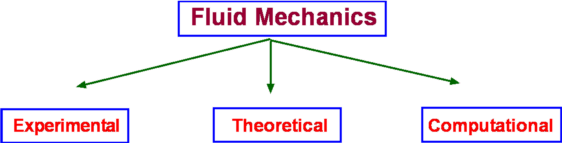

Properties of Fluids
Fluids occur in familiar, everyday items. They surround us as an atmosphere and oceans. Our body itself is mostly water. In fact, Greeks and Indians in the long distant past worshiped earth, fire, water and air; three of these being fluids. Motion of these fluids can be found almost everywhere- inside the human body, in our day-to-day activities such as taking a shower, cleaning, swimming etc. Flying and sailing are nothing more than the motion of an object through a fluid. Fluid mechanics is the science of the study of the behaviour of fluids and their effect on other bodies. It comprises of fluid statics, which is a study of fluids at rest and fluid dynamics, which concerns fluids in motion. Fluids can also be classied further as aerodynamics, which specialises in flow of air, or hydrostatics and hydrodynamics, which specialise in the flow of water.

Three Approaches to Fluid Mechanics
There are three approaches to fluid mechanics : experimental, theoretical and computational.
The experimental approach is the oldest one. It is a very popular approach where measurements are made using wind tunnels, water channels or similar equipment. Experiments are costly ventures and are becoming costlier day by day.
Then there is the theoretical approach where mathematical equations are employed that govern the flow and can capture the fluid behaviour within a closed form solution i.e., formulas that can be readily used. This is perhaps the simplest of the approaches, but its scope is somewhat limited. Not every fluid flow renders itself to an easy investigation. The resulting equations may be too complicated to solve directly.
Then comes the third approach, computational. In this approach complicated governing equations are solved by computing techniques using modern software algorithms. This has the advantage that a wide variety of fluid flows may be computed and that the cost of computing seems to be going down day by day. The emerging discipline of Computational Fluid Dynamics, CFD, has become a very powerful approach today in industry and research. It is worth noting however, that any theoretical calculation or numerical computation has to be validated. For this it is usual to rely on experiments. Theory guides and experiment decides.
In this site, the theoretical approach is the main focus as it gives a good insight into fluid mechanics. On occasion reference will be made to information provided by experimental studies and computational techniques. The development of the detailed CFD techniques is outside the scope of this work.
What is a Fluid?
It is well known that matter is divided into solids and fluids. Fluids can be further divided into Liquids and Gases. Solids have a definite shape and a definite size, while liquids have a definite size or volume, but no definite shape. They assume the shape of the container they are poured into. Gases, on the other hand may have neither a shape nor a size. They can fill any container fully and assume its shape. A more precise definition can be obtained by considering the properties of these materials. The response of a solid or a fluid to a shear force with define the difference. A solid resists a shear force while a fluid deforms continuously under the action of a shear force.
Figure 1. Deformation of a Solid
Consider two flat plates of infinite length placed a distance h apart as shown in Fig 1. The lower plate is fixed while the upper plate is allowed to move. The gap in between the plates is initially filled with a solid substance. If now a shear force is applied to the upper plate, the solid block deforms as shown. Line ab assumes a new position a'b' and the upper plate is displaced by a distance bb'. The deformation produced is proportional to the applied shear stress F/A, where A is the area of the solid surface in contact with the plate.
Figure 2. Deformation of a Fluid.
If the gap is filled with a fluid, when a shear force is applied to the top of the plate, it moves continuously ie., point b keeps moving and occupies positions b1, b2, b3, etc at different instants of time. The fluid block between the plates deforms and continues to deform as long as the force is applied. This experiment shows that a fluid at rest cannot resist shear stress. Such an experiment also can be used to define viscosity.
Continuum Hypothesis
It is well known that all matter is made up of molecules, which are in random motion. Any fluid can be considered as having molecules bombarding each other and the boundaries, i.e. the walls of the container. There is no guarantee whatever that molecules are present at a specific point at a given instant of time, but it is still possible to define the fluid velocity at a point. Velocity or density or any other fluid properties at a point can be defined in an average sense. That is, as an average of velocities (or densities) of the molecules that pass through a small volume surrounding that point. The size of this small volume has to meet with certain criteria. It must be smaller than the physical dimensions of the region under consideration, like the wing of an aircraft or the pipe in a hydraulic system. At the same time it must be of sufficient size to accommodate a large number of molecules to make any averaging meaningful. There is a lower limit to the size of this volume.
The existence of this limit is established by considering the definition of density as mass per unit volume (Δm/ΔV). Consider a small volume ΔV around the point (P, Fig. 3) within the region of interest, R. The density at P can be evaluated by considering different sizes of ΔV. Values of density for the different volumes are plotted in the same figure. It is clear that the size ΔV has an influence on the calculated value of density. Too small a ΔV, the value fluctuates because the small number of molecules within the volume varies significantly with time. Too big a ΔV might mean that density variation in the regioin of interest is not identified. It is clear that there is a limit ΔV0 below which molecular variations assume importance and above which one finds a macroscopic variation of density within the region.
Figure 3: Definition of Density
Therefore it appears that density is best defined as a limit,
$$ρ=lim_{\ΔV→0}({Δm}/{ΔV})$$
At standard temperature and pressure conditions (STP) the limit (ΔV0) is around 10-9mm3 for air. This tiny volume has about 3 x 107 molecules. This is a large enough number to give a constant value of density despite the rigorous molecular motion within it. For many of the applications in fluid mechanics, this minimum volume is much smaller than the overall dimensions of the regions of interest considered, e.g. an aircraft winge, a ship or the parts of an engine etc. These considerations start to break down when much greater altitudes are considered. For example, at an altitude of 130 km the molecular mean free path is about 10.2 m and there are only 1.6 x 1017 molecules in a cubic meter of air. Molecular mean free path, λ is defined as the average distance a molecule has to travel before it collides with another molecule. At STP conditions its value is 6 x 10-8 m . Under lower density conditions it becomes necessary to consider the effect of every molecule or groups of molecules, as in calculations concerning re-entry vehicles. That branch of fluid mechanics is called Rarefied Gasdynamics and is again outside the scope of this chapter.
Viscosity, μ
The more viscous a fluid is, the more sticky it is and the more difficult for it to flow. Oils flow at a slower rate than water. Viscosity is a fluid property that tends to retard fluid motion. A more rigorous definition of viscosity can be developed using the experiment mentioned above.
Figure 4: Flow between parallel plates
It was seen that when a shear force is applied to the top plate the fluid undergoes a continuous deformation (Fig.2). As a result the block of fluid abcd deforms to ab'c'd after a time Δt. If the speed of the top plate is U then the layer of fluid adjacent to a solid surface moves with the same velocity. This is called the "No Slip" condition. Accordingly, the fluid layer closer to the top plate moves with a speed U while that closer to the lower plate is at rest. Thus the velocity of the fluid varies continuously from zero on the lower plate to U at the upper plate. In other words, a velocity gradient develops in the fluid. In the simple case of the flow between parallel plates this is a linear profile. The velocity gradient is given by
$${du}/{dy}=U/h$$
where h is the distance between the two plates.
In a small instant of time Δt the upper plate has moved by a distance bb' which is equal to U.Δt.
Now
$$tan(Δα)≈Δα={U Δt}/h$$
Noting that for solids the shear stress τ is proportional to strain Δα while for fluids it is proportional to rate of strain, ${dγ}/{dt}$, which in turn is defined as
$${dγ}/{dt}=lim_{Δt→0}({Δα}/{Δt})$$
Substituting for Δα we have
$$ {dγ}/{dt}=U/h={du}/{dy}$$
Since τ is proportional to ${dγ}/{dt}$, we have $τ∝{dγ}/{dt}$ or
$$τ∝{du}/{dy}$$
It is found that for common fluids such as air, water and oil the relationship between shear stress and velocity gradient can be expressed as,
$$τ=μ{du}/{dy}$$
The constant of proportionality μ is an important property of fluids in determining the flow behaviour and is called dynamic viscosity or absolute viscosity. It is usual to refer to it as just viscosity.
Viscosity has the dimensions FLT-2 and units of Ns/m2 in the SI system.
Fluids for which the shear stress varies linearly as rate of strain are called Newtonian Fluids. Many of the common fluids belong to this category; eg. air, water, alcohol, etc. When the relationship between shear stress and rate of strain is not linear, the fluid is designated Non-Newtonian. Examples of this category are industrial fluids such as plastic paint, sludge and biological fluids such as blood. Typical plots of shear stress versus rate of strain are shown in Fig 5. Rheology is the branch of fluid mechanics which specialises in these fluids. In this chapter, primarily common fluids such as water and air or similar Newtonian fluids will be covered.
Figure 5 : Different Fluid Responses
Viscosity of a fluid is strongly dependent on temperature and is a weak function of pressure. For example, when the pressure of air is increased from 1 atm to 50 atm, its viscosity increases only by about 10 percent allowing one to ignore its dependence on pressure. Fig 6 shows the manner of dependence of viscosity on temperature for some of the common fluids. It is seen that the viscosity of liquids deceases with temperature while that for the gases increases with temperature. This difference in behaviour is explained by the cohesive and intermolecular forces within the fluid. Liquids are characterized by strong cohesive forces and close packing of molecules. When temperature increases cohesive forces are weakened and there is less resistance to motion. Hence viscosity decreases.
With gases, the cohesive forces are very weak and the molecules are spaced apart. Viscosity is due to the exchange of momentum between molecules as a result of random motion. As the temperature increases the molecular activity increases giving rise to an increased resistance to motion or in other words viscosity increases.
Figure 6 : Viscosity Variation with Temperature
Formulas for Variation of Viscosity
A widely used formula for the calculation of the variation of viscosity with temperature for gases is the Sutherland Law given by
$$μ=μ_{ref}(T/T_{ref})^{3\/2} {T_{ref}+S}/{T+S}$$
where
$T_{ref}$ is a reference temperature
$μ_{ref}$ is the viscosity at the reference temperature
S is the Sutherland temperature
This can be written as
$$μ= {C_1 T^{1.5}}/{T+S}$$
For air $C_1=1.458×10^{-6}$ ${kg}/{ms √{K}}$ and S = 110.4 K.The Power Law is another approximation to calculate viscosity and is given by
$$μ/μ_0=(T/T_0)^{0.7}$$
where $μ_0$ is the value of viscosity at a reference temperature $T_0$, which is typically 273K.
An empirical approximation for the viscosity of liquids is
$$ln(μ/μ_0)=a+b(T_0/T)+c(T_0/T)^2$$
For water, $T_0=273.16K$ $μ_0=0.001792 {kg}/{ms}$, a=-1.94, b=-4.80 and c=6.74.
Another empirical formula for liquids is the Andrade equation namely,
$$μ=De^{B\/T}$$
where B and D are constants and T is the temperature in K
Kinematic Viscosity, ν
In fluid flow problems viscosity often appear in combination with density in the form
$$ν=μ/ρ$$
One of the common examples is Reynolds number, defined as VL/ν, this is one of the very important parameters in fluid dynamics. The term ν is referred to as Kinematic Viscosity and has the dimensions of L2/T. Fig. 7 shows a plot of ν for air and water against temperature.
Figure 7 : Kinematic Viscosity variation with temperature
Density, ρ
Density is defined as mass per unit volume of the substance. However, as discussed before, in the case of a Continuum Hypothesis, it is defined as a limit. If ΔM is the mass of a small volume ΔV then
$$ρ=lim_{ΔV→0}({Δm}/{ΔV})$$
The unit of density in the SI system is kg/m3 . Under ordinary conditions the density of water is 993 Kg/m3 while that for air at 15oC and atmospheric pressure is 1.225. Kg/m3
Density of liquids is somewhat insensitive to the changes in pressure and temperature. For gases there is a strong dependence of density on these quantities and is given by the equation of state of the particular gas.
Specific Volume, v
The specific volume, v of a fluid is defined as the volume per unit mass and its numerical value is given by the reciprocal of density.
$$v=1/ρ$$
Specific Weight, γ
The specific weight, γ, of a fluid is defined as the weight per unit volume and is related to density.
$$γ=ρg$$
where g is acceleration due to gravity. Its units (in SI) are N/m3 . Note that the value of g is 9.807m/s2 so that the specific weight of water at 60oC is 9.8 KN/m3. For air at 15oC and atmospheric pressure specific weight is 12 N/m3.
Specific Gravity, SG
The specific gravity, SG of a fluid is the ratio of its density to that of water under reference conditions, usually at 4oC (i.e., 1000 Kg/m3.)
$$S.G.=ρ/{ρ_{water\ at\ 4^oC}}$$
Specific gravity being a ratio of densities is independent of units. Its value for mercury at 20oC is 13.55. There is not a single set standard for reference density. Sometimes for gases, density of air under standard conditions 1.225 Kg/m3 is used as the reference.
Pressure, P
Pressure along with velocity is one of the main parameters in fluid dynamics. It is defined as the compressive stress at any point in a fluid at rest. For a thin plate immersed in a fluid at rest, pressure is the normal force per unit area exerted on the plate. It is brought about by the bombardment of fluid molecules upon the solid surface.
Dimensions of pressure are F/L2 which is also called a Pascal.
At low speeds fluid flow is caused by pressure differences and gradients than due to pressure itself; the actual pressure level within a fluid becomes less important. But for high speed flows the magnitude of pressure may become important. At the very low pressure extreme for liquids, vaporisation may occur.
Pressure values read by measuring devices such as a manometer are the pressure levels above the surrounding atmospheric pressure and are called gauge pressure. When pressure is referred to a vacuum it becomes an absolute Pressure being the sum of the gauge pressure and atmospheric pressure.
Temperature, T
Temperature is a measure of the random molecular motion of the fluid at a point. The hotter the fluid the more energy is stored in random motion of molecules.
The unit of temperature is Kelvin (K), and is an absolute measure of thermal energy. Centigrade (oC), is a relative measure with 0 degrees at the freezing point of water.
Velocity, U
Velocity of the flow is the average speed of all molecules at a point in the flow at a given time. Velocity is a vector quantity and can be constructed from three scalar components (u,v,w) (horizontal, vertical, forward)
Figure 8. Velocity Vector and Components
The units of Velocity are m/s in the metric system.
Ideal Gas Law
Pressure, density and temperature of a gas are related through an equation of state. Under ordinary conditions for air,
$$P=ρRT$$
where P is the absolute pressure, ρ the density, T the absolute temperature and R is a gas constant. The above equation is called the Ideal Gas Law or the Perfect Gas Equation. The gases obeying this equation are called Ideal Gases.
The gas constant R (Ideal Gas Law ) is given by
$$R=ℝ/M$$
where ℝ is called the universal gas constant and is equal to 8314 J/kg.K and M is the molar mass of the gas. For air the gas constant R = 286.9 J/kg.K .
Bulk Modulus, Ev
The bulk modulus determines how compressible a fluid is. In other words, it is a measure of how the density of a fluid changes when the fluid is subjected to pressure. It is defined as
$$E_v=-V_i{dP}/{dV_i}=ρ{dP}/{dρ}$$
where dP is the pressure change that is required in order to change the volume by $dV_i$, $V_i$ being the initial volume. The negative sign indicates that an increase in pressure is accompanied by a decrease in volume.
The dimensions of bulk modulus are FL-2; the units being N/m2. Higher values of bulk modulus indicates that it is difficult to compress the fluid. For example, the bulk modulus of water is 2.15 x 109 N/m2, meaning that it requires an enormous pressure to change the volume of water by a small amount. For all practical purposes water (and many other liquids as well) is treated as being incompressible.
Bulk Modulus for Gases
Gases have an equation of state that connects pressure, density and temperature. This enables us to deduce an explicit relationship between pressure and density. Such a relationship depends upon the process being considered - isothermal (at constant temperature) or isentropic (at constant entropy). The equations are
$P/ρ=constant$ For an isothermal process
and
$P/ρ^k=constant$ For an isentropic process.
where k is the ratio of specific heat at constant pressure, Cp to the specific heat at constant volume,Cv.
In addition
$$C_P-C_v=R$$
where R is the gas constant. Under ordinary conditions k=1.4 for air.
By substituting in the definition for bulk modulus,
$E_v=P$ For an isothermal process
$E_v=kP$ For an isentropic process
Thus we see that the bulk modulus for a gas depends upon its pressure. Given that for air the atmospheric pressure at STP conditions is 1.01325 x 105 N/m2, the bulk modulus is of the same order, while that for water it is 2.15 x 109 N/m2 . These figures show that air is about 15,000 times as compressible as water.
Vapour Pressure
When a liquid is exposed to atmosphere molecules escape from its surface in a vapour form. If the liquid is placed in a closed container, the activity continues so that vapour fills the space in between the liquid level and the container. A pressure develops and reaches an equilibrium. The vapour is said to be saturated. The pressure it exerts upon the liquid surface is the vapour pressure.
Surface Tension, σ
Surface Tension is acts between two immiscible liquids or between a liquid and gas, i.e. water and air. The interface between the two fluids is assumed to act like a stretched membrane under tensile stress. This stress is required to hold the membrane in position. Many exmaples can be found in everyday life of the effect of surface tension. A steel needle will float on water due to the apparent tension developed at the water surface. Water drops form on smooth surfaces. Tiny spheres of mercury will form when it is poured on a smooth surface. Unbalanced cohesive forces acting on liquid molecules at the interface are balanced by the tensile force due to surface tension.
Surface tension, σ, is expressed as force per unit distance (N/m) and has dimensions of FL-1. Its magnitude depends upon the two fluids in contact and on temperature.
Pressure inside a Drop of Fluid
It is due to surface tension that pressure of a liquid increases within a bubble. Consider the free-body diagram of a bubble as shown in Fig. 9.
Figure 9 : Forces acting on a bubble membrane
If the force due to surface tension at the edge is balanced by the pressure force inside the bubble, we have
$$2πRσ=PπR^2$$
i.e.,
$$P={2σ}/R$$
where P is the pressure difference between inside the drop and that outside. In addition the pressure inside the bubble is greater than that outside.
Capillary Tube
Figure 10 : Capillary Tube
As shown in Fig. 10, if a small open tube is inserted into a container with water, the water raises into the tube. A liquid-gas-solid interface is formed. In this case, attraction or adhesion between solid and water is strong and is able to overcome the mutual cohesion between liquid molecules. That is why water rises into the tube. The liquid is said to wet the surface.
The height of the liquid column is related to surface tension, tube radius, specific weight of the liquid and angle of contact θ between liquid and the tube. The vertical force due to surface tension, 2πRσcos(θ) and weight of the fluid, γπR2h, will balance each other.
$$γπR^2h=2πRσ\cos(θ)$$
or
$$h={2σ\cos(θ)}/{γR}$$
It is seen that if the tube radius is small the capillary rise, h, is pronounced. That is, the narrower the tube more the height to which the fluid rises in it. Whether the fluid rises in the capillary tube or not is decided by the contact angle (θ) shown in Fig. 10. This is the angle between the solid and the liquid surfaces. When this angle is less than 90o the surface tension is such as to pull the fluid through the tube. There is a meniscus (concave upwards). The liquid is said to wet the surface.
But when the angle is greater than 90o, as happens with mercury, the liquid level is actually depressed and the liquid does not wet the surface.